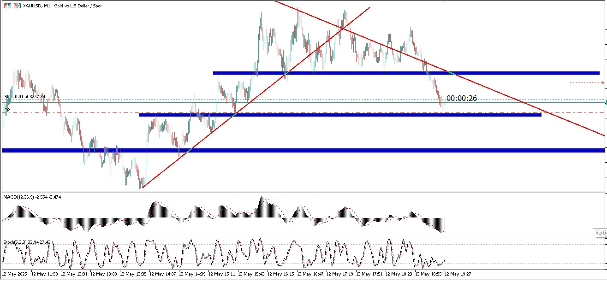
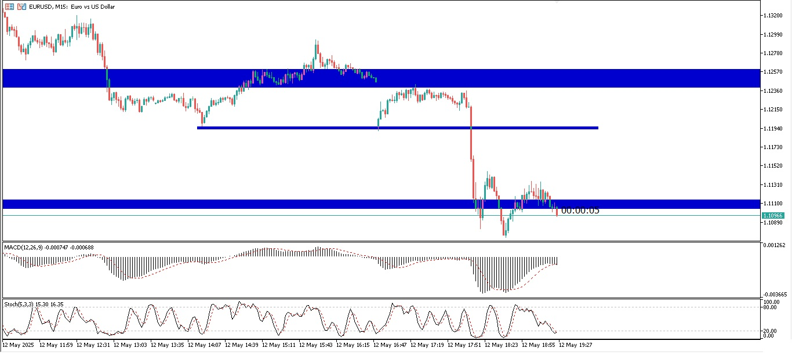

📈 سیگنال خرید طلا (XAU/USD)
قیمت طلا به حمایت 2300 رسیده، در صورت تثبیت، احتمال برگشت تا 2340 وجود دارد.
نقاط ورود: 2305 - حد سود: 2335 - حد ضرر: 2290

تاریخ: 12 اردیبهشت 1404
📉 سیگنال فروش یورو/دلار (EUR/USD)
واگرایی منفی در RSI دیده میشود، شکست سطح 1.0700 نشانه ادامه روند نزولی است.
نقاط ورود: 1.0695 - حد سود: 1.0620 - حد ضرر: 1.0730

تاریخ: 12 اردیبهشت 1404